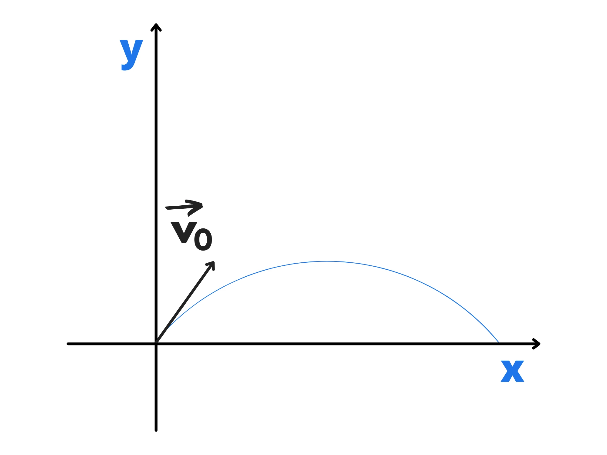
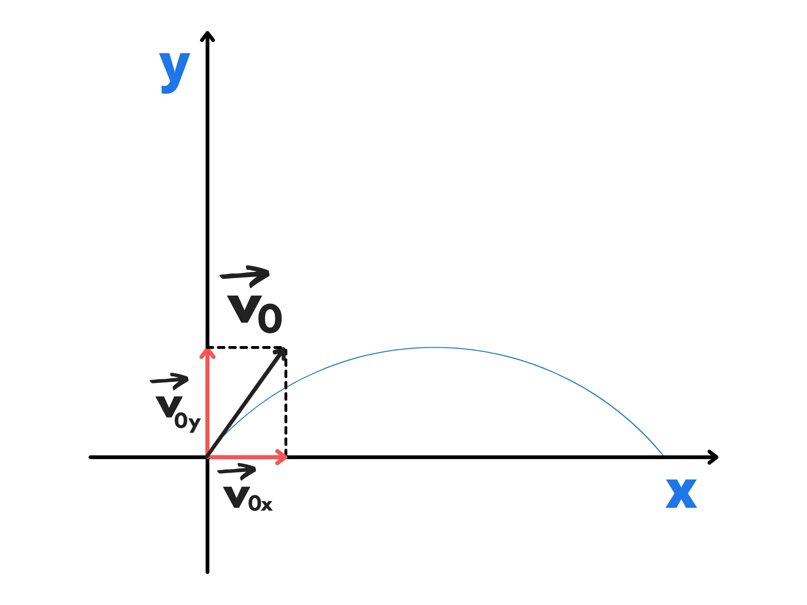

Adesso che abbiamo studiato il moto di caduta libera, guardiamo al moto di un proiettile. Un proiettile è un corpo che viene lanciato con una certa velocità ed un certo angolo. Viene talvolta chiamato moto parabolico perché, come vedremo, traccia una parabola.
Iniziamo studiato un caso particolare:
Cosa succede quando si lancia orizzontalmente un oggetto da una certa altezza \(h\)?
Iniziamo notando che possiamo scomporre il moto nel moto effettuato su due assi, ovvero come si muove sull’asse \(x\) e come sull’asse \(y\).
Sull’asse \(x\), non c’è alcuna forza (e quindi alcuna accelerazione) che agisce sul corpo se si trascurano gli attriti. Di conseguenza continuerà a muoversi alla velocità iniziale \(v_0\) di moto rettilineo uniforme. Avremo quindi:
\(x(t)=v_0t\)
Sull’asse \(y\) invece, agisce la forza di gravità. Avremo quindi un’accelerazione verso il basso pari a \(y\). La velocità iniziale sull’asse \(y\) è uguale a \(0\), quindi avremo un moto di caduta libera da un’altezza \(h\). Di conseguenza:
\(y(t)=h-{gt^2 \over 2}\)
Isoliamo \(t\) nell’equazione del moto sull’asse \(x\) e sostituiamola in quella del moto sull’asse \(y\):
\(t={x(t) \over v_0}\)
\(y(t)=h-{g({x(t)\over v_0})^2 \over 2}\)
Siccome \(x(t)\) ed \(y(t)\) non dipendono più da \(t\), richiamiamole in generale \(x\) ed \(y\) e riordiniamole:
\(y=-\frac{gx^2}{2{v_0}^2}+h\)
\(y=-{g\over {2{v_0}^2}}x^2 +h\)
Notiamo che si tratta dell’equazione di una parabola. Infatti traccerà una parabola:
Se vogliamo calcolare quanto tempo impiegherà a cadere, siccome sull’asse \(y\) abbiamo un moto di caduta libera, sappiamo già che sarà uguale a:
\(t_c=\sqrt{{2h\over g}}\)
Se ci viene chiesto invece quanto andrà lontano, possiamo calcolarlo guardando a che punto sta sull’asse \(x\) quando tocca terra (ovvero nell’istante \(t_c\)) . Possiamo farlo sostituendo il tempo di caduta nella legge oraria del moto sull’asse \(x\):
\(x(t)=v_0t\)
\(x(t_c)=v_0 \sqrt{2h\over g}\)
Ora sapete tutto quello che c’è da sapere su questo tipo di moto
Cosa succede se, invece di lanciarlo orizzontalmente, lo lanciamo con un certo angolo \(\theta\) ?
Come nel caso di prima, scomponiamo il moto sui due assi cartesiani.
Iniziamo dall’asse \(x\) perché è il più semplice.
Usando un pò di trigonometria possiamo scomporre la velocità iniziale sui due assi:
Avremo quindi:
\(v_{0x}=v_0 \cos(\theta)\)
\(v_{0y}=v_0 \sin (\theta)\)
Se non ci sono attriti, non abbiamo forze (e quindi neanche accelerazioni) che agiranno sul corpo. Di conseguenza, sull’asse \(x\) continuerà a muoversi con velocità \(v_{0x}\) di moto rettilineo uniforme. La legge oraria sarà quindi:
\(x(t)=v_{0x}t\)
Sull’asse \(y\), invece, avremo un moto di salita libera seguito da un moto di caduta libera. Infatti, guardando solo al moto sull’asse \(y\), stiamo lanciando un oggetto verso l’alto per poi farlo ricadere.
Di conseguenza avremo:
\(y(t)=v_{0y}t- {gt^2 \over 2}\)
Isoliamo \(t\) nella legge oraria del moto sull’asse \(x\) e sostituiamolo in quella sull’asse \(y\):
\(t={x(t) \over v_{0x}}\)
\(y(t)=v_{0y} \cdot {x(t)\over v_{0x}} -{g({x(t)\over v_{0x}})^2 \over 2}\)
Siccome non è più presente \(t\) nell’equazione, richiamiamo \(y(t)\) e \(x(t)\) come \(x\) e \(y\) e riordiniamola:
\(y=-\frac{g}{2v_{0x}^2} x^2 + {v_{0y} \over {v_{0x}}}x\)
Anche in questo caso otteniamo una parabola:
Di questa parabola potremmo voler trovare il vertice e l’intersezione con l’asse \(x\).
L’intersezione con l’asse \(x\) avviene quando il corpo ricade a terra. La distanza percorsa sull’asse \(x\) si chiama gittata.
Per trovare le intersezioni dobbiamo imporre \(y=0\) e risolvere per \(x\):
\(0=-\frac{g}{2v_{0x}^2} x^2 + {v_{0y} \over {v_{0x}}}x\)
\(x(-{g\over 2v_{0x}^2}x + {v_{0y} \over v_{0x}})=0\)
La prima soluzione è quando \(x=0\), che è infatti quando lanciamo l’oggetto. La seconda, che è quella che ci interessa, sarà:
\(-{g\over 2v_{0x}^2} x + {v_{0y} \over v_{0x}}=0\)
\({g\over 2v_{0x}^2} x = {v_{0y} \over v_{0x}}\)
\(x={2v_{0y} v_{0x}^2 \over v_{0x} g} = {2v_{0y} v_{0x} \over g}\)
Se vogliamo possiamo riscriverla in funzione di \(v_0\) e \(theta\) :
\(x={2v_0 \sin(\theta) v_0 \cos (\theta) \over g}= {2 \sin(\theta) \cos(\theta) v_0^2 \over g}\)
Una formula più avanzata di trigonometria ci dice che:
\(\sin (2\theta)=2\sin(\theta)\cos(\theta)\)
e possiamo quindi semplificare l’equazione per la gittata:
\(G={\sin(2\theta) v_0 ^2 \over g}\)
Se vogliamo calcolare il vertice, sappiamo che siccome la concavità è verso il basso, esso sarà il punto più alto del moto. La sua altezza (ovvero la sua ordinata) sarà dunque \(h\):
\(V_y=h\)
Siccome sull’asse \(y\) abbiamo un moto di caduta libera, avremo:
\(v_{0y} = \sqrt{2hg}\)
\(h={v_{0y}^2 \over 2g}\)
E quindi:
\(V_y={v_{0y}^2 \over 2g}\)
Per la sua ascissa, invece, ci basta ricordare che una parabola è simmetrica rispetto al suo asse. Di conseguenza. L’ascissa del vertice si troverà a metà tra le due intersezioni. Siccome la prima è \(x=0\) e la seconda è uguale alla gittata, avremo:
\(V_x = {{2v_{0x}v_{0y} \over g} \over 2}={v_{0x} v_{0y} \over g}\)
Per il tempo totale del moto, ci basta ricordare ancora una volta che abbiamo un moto di caduta libera sull’asse \(y\). Quindi siccome prima sale e poi scende, avremo:
\(t_{tot} =t_s +t_c=\sqrt{2h\over g}+\sqrt{2h\over g}=2\sqrt{2h\over g}\)